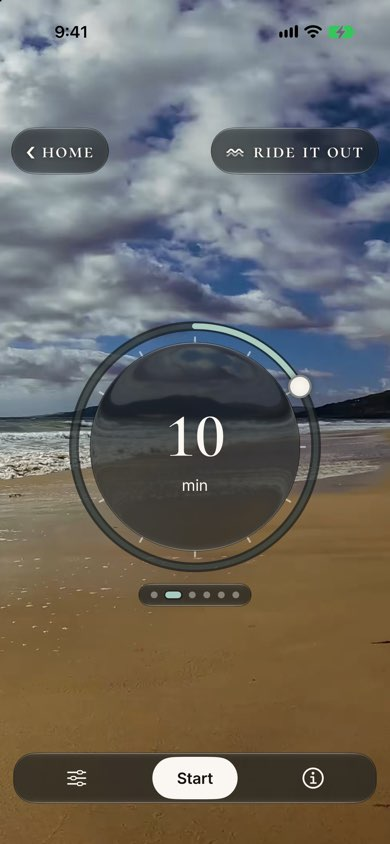
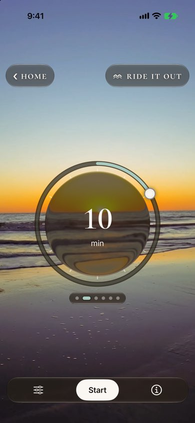
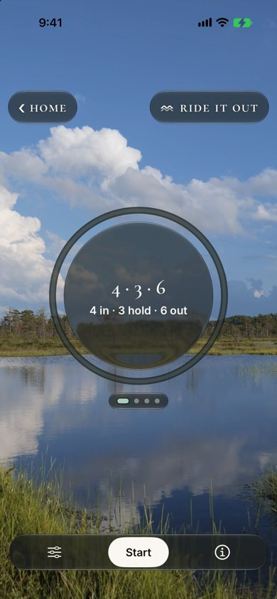
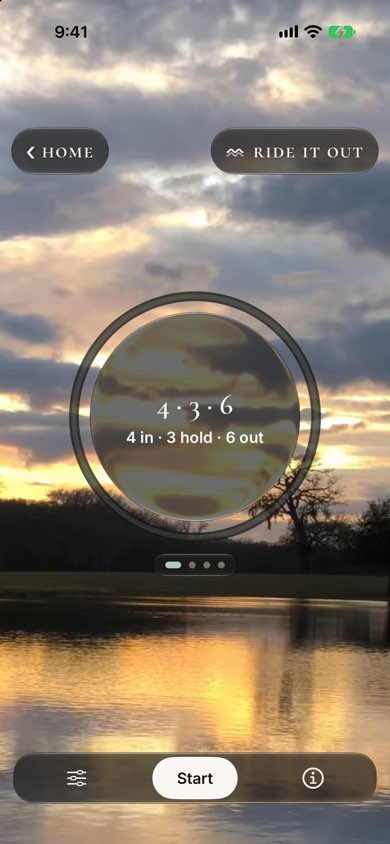
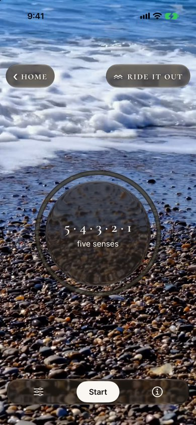
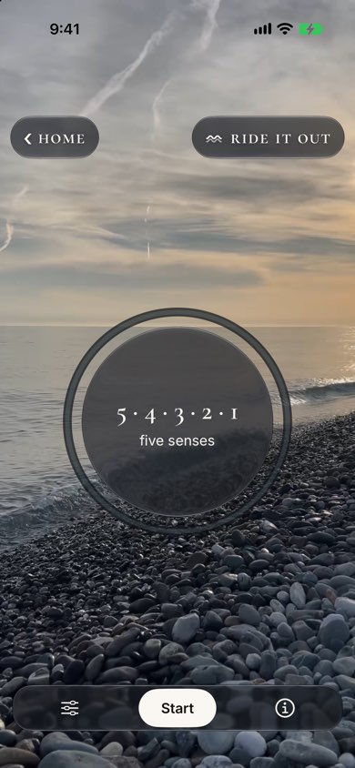

- IThe Sheltered CoastHome
- IIThe Path AheadWalk
- IIIThe Still PoolBreathe
- IVThe ShoreGround
- VThe CoveStay a while
- VIThe ShelterJournal
- VIIThe OutlookHistory
- VIIIThe Way OnYour progress
- IXThe CottageYou
Plate I · The Sheltered Coast
Urges pass, like waves.
Urge Walk is a small iPhone app for the next few minutes. When an urge hits, take a walk, breathe for a minute, or come back to your senses.
Coming to iPhone · For adults 18 and older


Plate II · The Path Ahead
Walk at your own pace.
Choose a length, or no timer at all. Coming back is the point, not the distance.


Plate III · The Still Pool
Breathe for a minute.
In for four, hold for three, out for six. One slow minute, with room around it.


Plate IV · The Shore
Come back to right here.
Five things you can see, four you can touch, three you can hear, two you can smell, one you can taste.
On the Watch
On your wrist, too.
Walk, Breathe and Ground are on Apple Watch as well.
The endpaper’s promise
Personal recovery records stay on your iPhone and your Apple Watch, always.
No account. No ads. No tracking. Apple Health is off unless you allow it. Read the privacy policy.
For adults 18 and older
Help
Urge Walk is not a crisis service and isn’t a substitute for professional care. In the US, call or text 988 any time (Suicide & Crisis Lifeline, 24/7). Elsewhere, findahelpline.com. In an emergency, call your local emergency number.
Community
A small room on Discord for adults, 18 and older. Optional. Discord is a separate service with its own terms. About the community · Join on Discord.
Keep it on your phone
Walk, Breathe and Ground open like an app from your home screen and keep working with no signal.
On iPhone, in Safari: tap Share, then Add to Home Screen.
In your browser’s menu, choose Install or Add to Home Screen.
It is on your home screen. The tools work offline.